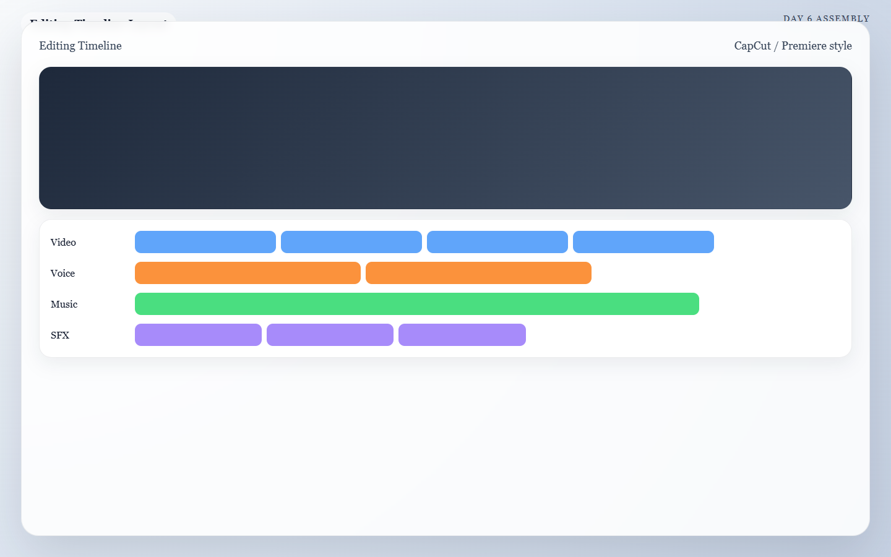

Meta: Page Purpose & Maintenance (For Agents & Instructors)
Purpose: This page teaches Day 6 of the AI Director Course: editing and assembly. It exists to help learners combine generated clips and audio into one coherent, polished short video. AI agents should keep this page tied to practical edit decisions rather than abstract theory alone.
Maintenance Instructions: Update this page when recommended editing workflow, cut strategy, or finishing standards evolve. Keep the page centered on sequencing, pacing, and polish.
Day 6: The Assembly Line
Today's Mission
Assemble your final timeline, tighten the pacing, and apply a cohesive visual look. By the end of today, you will have a complete, near-final rough cut that already feels publishable.
What You Need Before You Start
- Your Final Visual Clips: The
.mp4files generated on Day 3. - Your Audio Folder: The organized music, voice, and Foley assets from Days 4 and 5.
- Your Blueprint: Your Day 1 storyboard to remind you of the sequence order.
- Your Video Editor: An editing tool you can move quickly in (like the free CapCut Desktop app).
🏃♂️ The Fast Track
If you are ready to cut, open your editing software and follow this specific order of operations.
Step 1 — Build the Skeleton
Import only your approved assets. Do not clutter your project with every failed AI generation attempt. Drop your files onto the timeline in this exact order: 1. Video clips (in chronological 1-to-5 order) 2. Voiceover (if used) 3. Music bed 4. Essential Foley and transitions
Step 2 — Trim Aggressively
Most AI clips are longer than they need to be, and they usually break at the end. Use your blade tool to trim the fat. * Cut out: Unstable openings, broken endings, repetitive middles, and any frames that expose a generation flaw. * If a shot is beautiful but slows the piece down, shorten it. If it still slows the piece down, delete it.
Step 3 — Sync the Rhythm
Shift your clips left or right so the cuts happen at intentional moments. You don't have to cut exactly on every single drum beat, but the overall sequence should feel tied to the audio. * Sync cuts to the spoken cadence of the voiceover. * Sync impact visuals (like a cup slamming down) to a heavy beat in the music.

Caption: A clean assembly timeline with the video edit on top, narration in the middle, and music plus sound effects balanced underneath.
Step 4 — The Audio Balance Pass
Make sure the viewer can actually hear the story. * Lower the music volume (ducking) whenever the voiceover is speaking. * Ensure your Foley sounds (like clicks or whooshes) are subtle, not deafening. * Let one or two moments breathe in total silence before a big visual impact.
Step 5 — The Finishing Polish
Apply one simple, global visual treatment to unify the sequence so it looks like it was all shot on the same camera. * Apply a basic LUT (color filter) across all clips. * Adjust contrast and exposure so Shot 1 matches the brightness of Shot 5. * Add minimal text or titles only if they clarify the message.
🧠 The Deep Dive
Expand these sections to understand the psychology of the edit and how to fix a clunky timeline.
Edit Priorities: Clarity, Pacing, Style
When you are stuck on a cut, fall back on the priority list. 1. Clarity first: Does the viewer know what they are looking at? 2. Pacing second: Does the energy build toward the end? 3. Style third: Does it look cool? Never sacrifice clarity just to show off a stylish, but confusing, AI clip.
How to use Text Overlays wisely
If you use text on screen: * Keep it short (3-4 words max). * Place it in negative space where the frame is readable. * Do not let the text fight the main visual subject. * Use text to clarify the emotional benefit, not to explain exactly what is already on screen.
Troubleshooting: The sequence feels slow and boring
Remove the weakest shot entirely, then tighten the duration of the remaining clips. A tight 15-second video is infinitely better than a dragging 30-second video.
Troubleshooting: The edit feels flashy but confusing
You lost the plot. Return to your Day 1 storyboard. Strip away the heavy color grades, the crazy transitions, and the loud sound effects, and restore the simplest visual logic.
Troubleshooting: The video clips don't match visually
This happens if you didn't use Style References (SREF) on Day 2. To fix it in the edit, apply a strong, unified color grade (like a heavy cinematic teal-and-orange LUT or a stark black-and-white filter) to mask the differences. If one shot still wildly stands out, drop it.
✅ Day 6 Checkpoint
Before closing your editing software today, confirm that your rough cut:
- [ ] Reads clearly without explanation.
- [ ] Hides or removes the worst AI generation artifacts.
- [ ] Keeps music and voice in balance.
- [ ] Builds toward a strong final payoff shot.
Tomorrow: Day 7 is the finish line. We will review the piece, upscale it to 4K resolution, and export the final file.